碎片知识
首页
网站客服
装机推荐
硬件学习资料
计算机硬件是指构成计算机系统的各种物理组件和设备。它们是计算机运行的基础，没有这些硬件，计算机就无法正常工作。
一、中央处理器（CPU）：计算机的大脑，负责执行程序中的指令。
二、内存（RAM）：临时存储数据和程序，供CPU快速访问。
三、存储设备： 1.硬盘驱动器（HDD）：长期存储数据。 2.固态驱动器（SSD）：使用闪存存储数据，比HDD更快
四、主板（Motherboard）：所有硬件组件连接的平台，负责数据传输和电源分配。
五、电源供应器（Power Supply Unit, PSU）：为计算机提供所需的电力。
六、图形处理单元（GPU）：处理图形和视频渲染，对于游戏和图形设计非常重要。
七、输入设备： 键盘、鼠标等
八、输出设备： 显示器、打印机等
包括5中绚丽的切换效果
一、运算器：负责执行算术运算和逻辑运算。
二、控制器：负责指令的接收、处理和执行。
三、存储器：负责数据存储和处理。
四、输入设备：键盘、鼠标等。
五、输出设备：显示器、打印机等。
从2K—2W玩的就是刺激，主打一个性价比，不管是游戏爱好者还是生产力都不是问题；两个愿望一次满足，不管是游戏还是工作都能有所收获。
一、主板（Motherboard）：是所有硬件组件连接的平台，负责数据传输和电源分配。
二、电源供应器（Power Supply Unit, PSU）：为计算机提供所需的电力。
三、图形处理单元（GPU）：处理图形和视频渲染，对于游戏和图形设计非常重要。
四、网络接口：允许计算机连接到网络，如以太网端口或无线网络适配器。
五、声卡：处理音频输入和输出。
六、外围设备：如打印机、扫描仪、外部存储设备等。
七、机箱：保护内部组件并提供散热。
八、冷却系统：如风扇或液冷系统，用于保持硬件在适宜的温度下运行。
人类几千年智慧的最终结晶，计算机硬件的设计也如此。
- 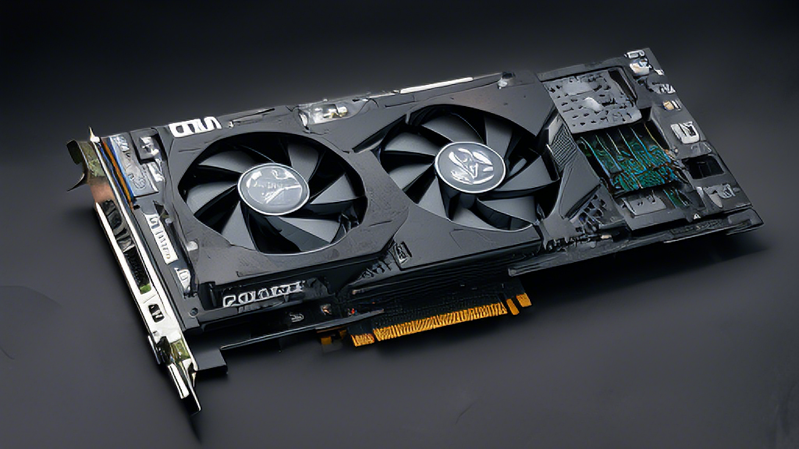
- 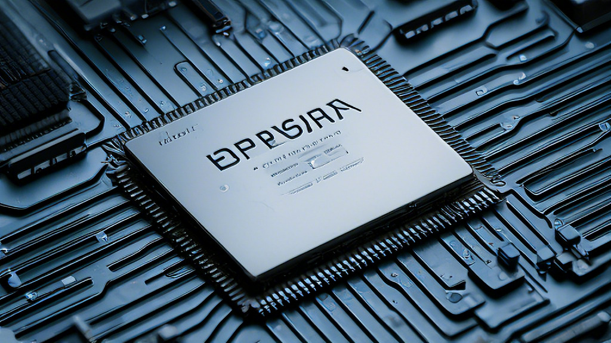
- 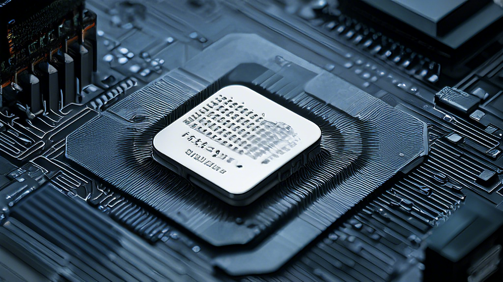
- 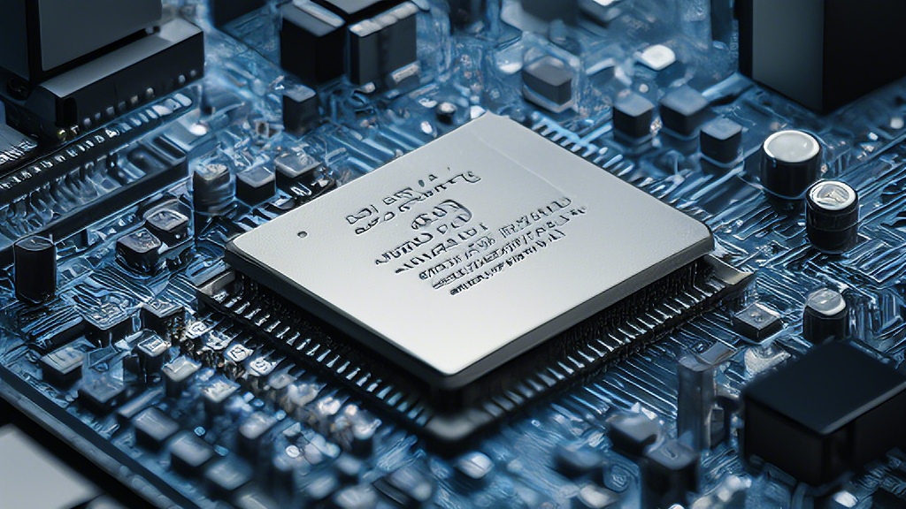
- 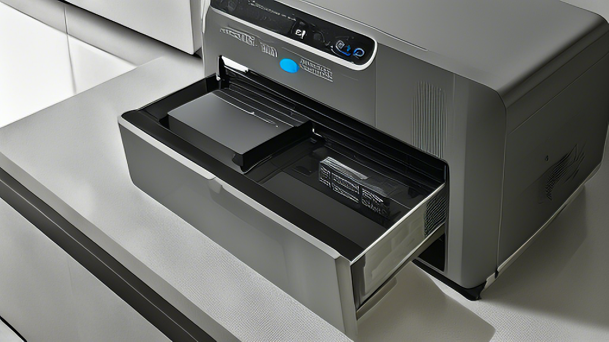
- 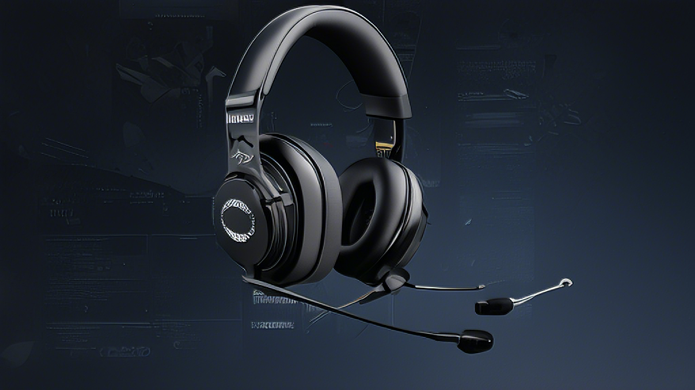
- 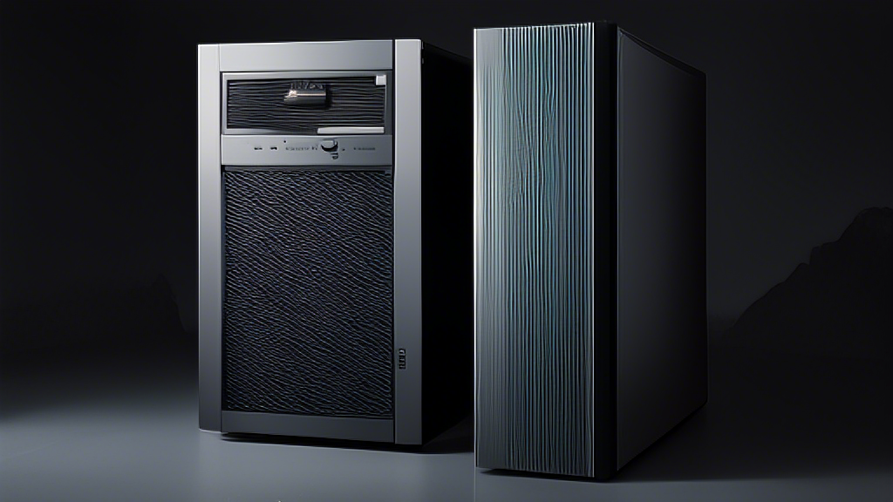
- 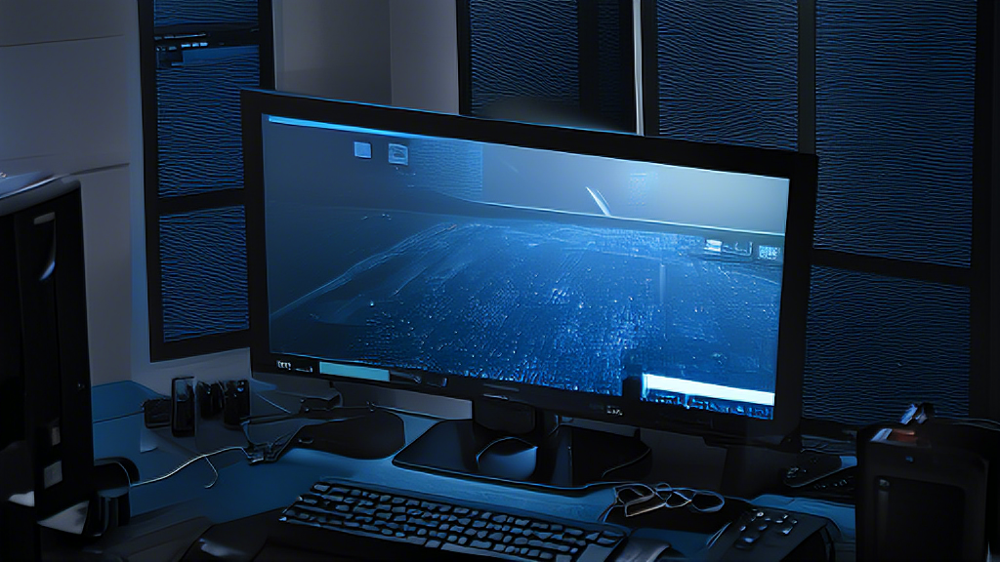
- 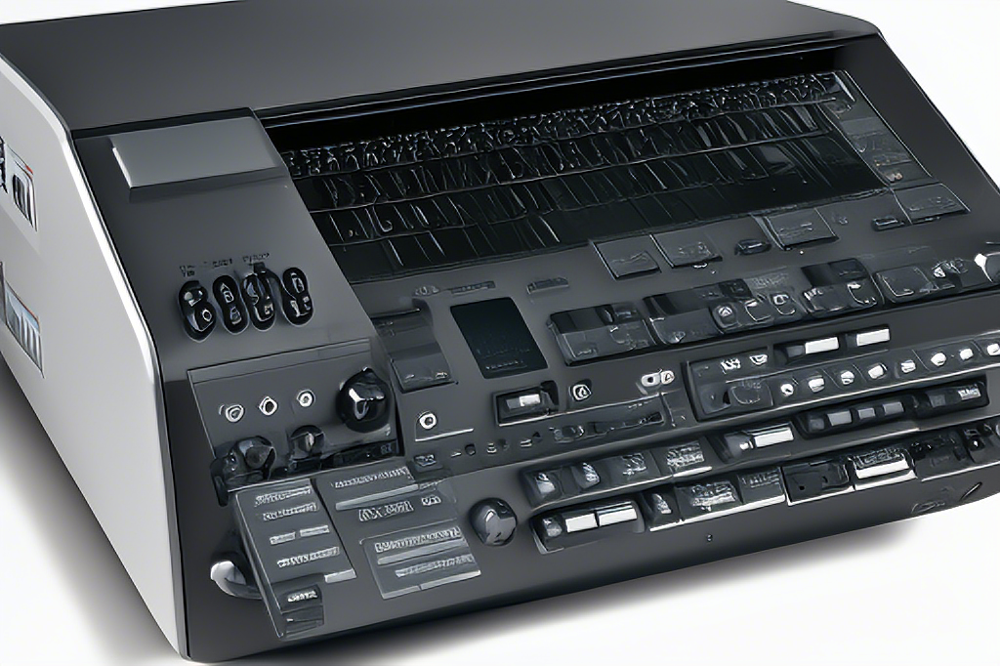
- 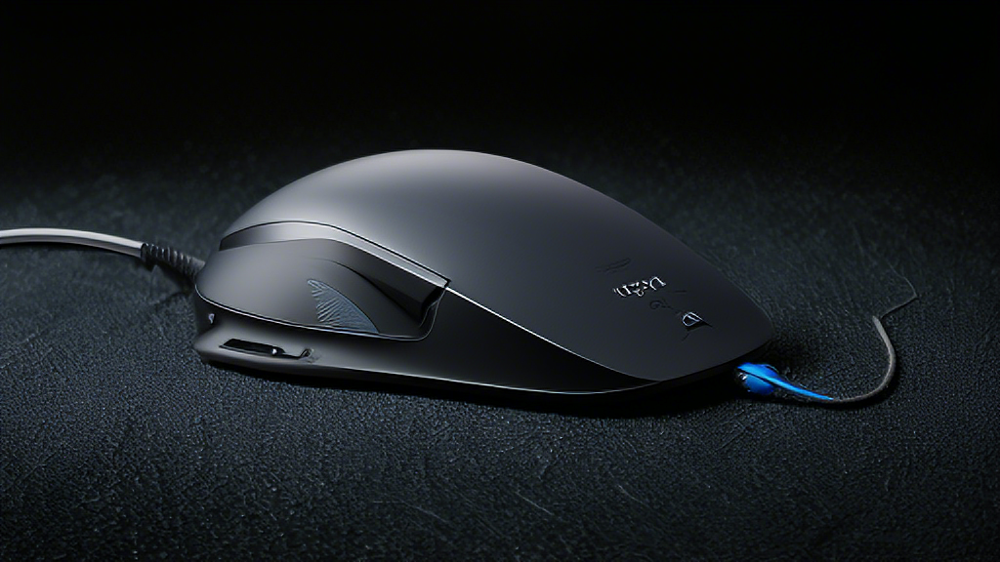
- 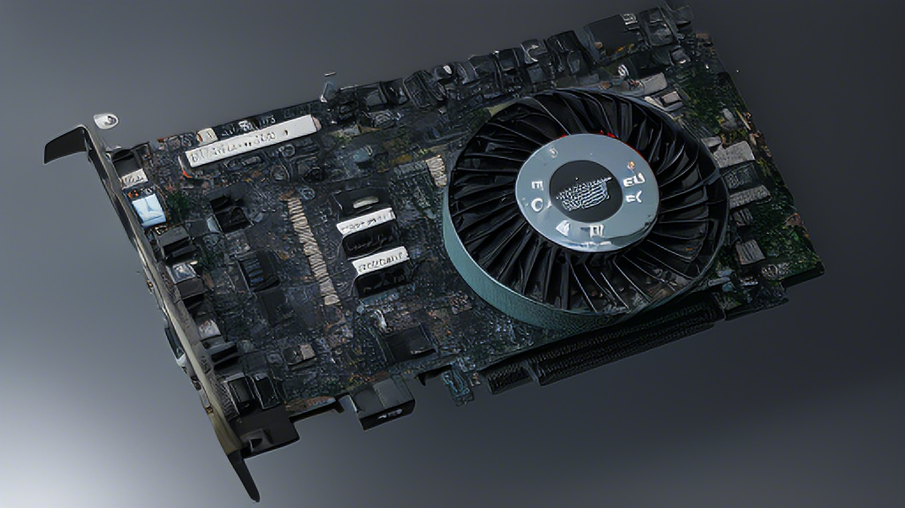
利用数绘板和js制作动画